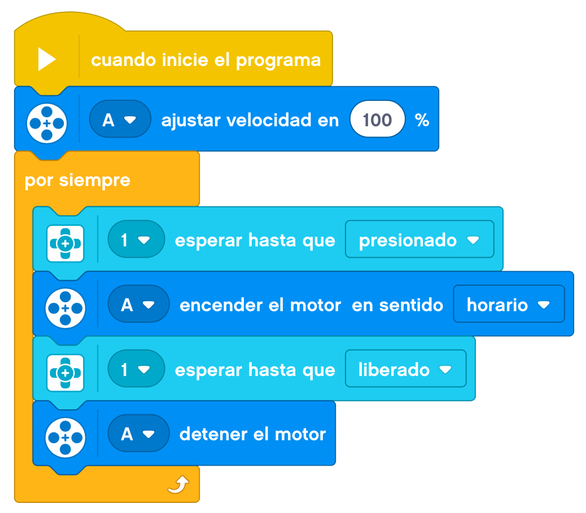

Vamos ha simular hoy un juego que mucha gente conoce, sobre todo para que las mascotas se entretengan. El lanzador de hilo.
El juguete tiene que mantener un hilo en el aire.
Lo haremos con un artilugio que tenga un motor y mueva dos ruedas por donde pasará el hilo y al darle
velocidad lo mantendrá en el aire haciendo diversas figuras.
A continuación, mostraremos un ejemplo de construcción de un lanza aviones base.
Le añadimos el cableado y tendríamos nuestro modelo terminado.
Programaremos el lanzador de hilo para que vaya subiendo de velocidad poco a poco. Una velocidad alta desde
el principio puede hacer que los engranajes se salgan de su sitio y dejen de funcionar.

Nuestro proyecto terminado funcionaría de la siguiente forma.